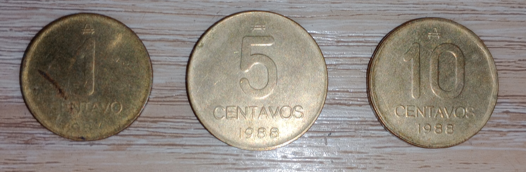
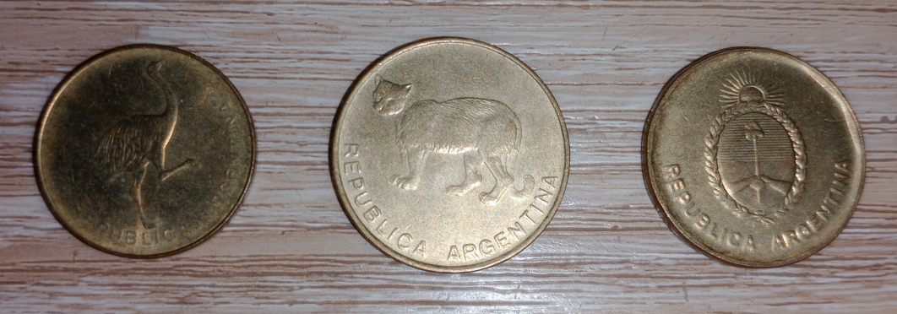
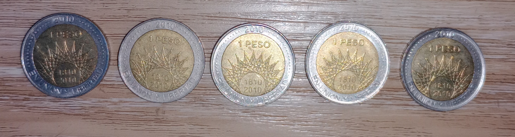
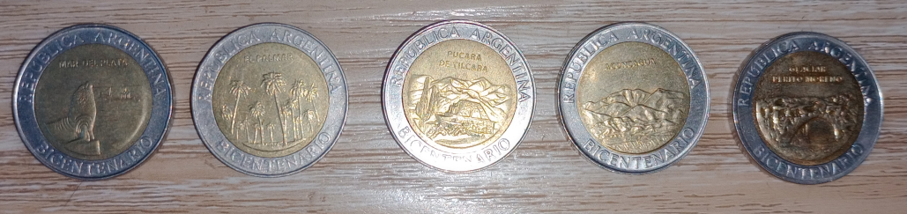
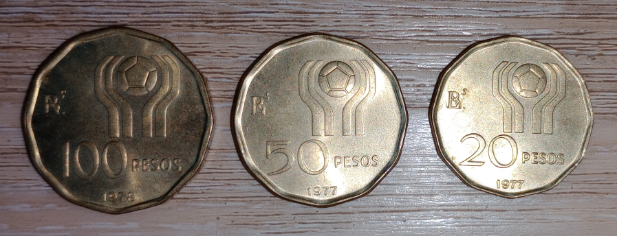
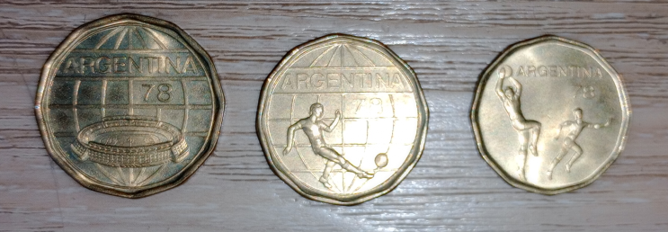

AUSTRALES


En la presente imagen podemos ver monedas que se utilizaban en Argentina cuando la moneda corriente eran los AUSTRALES.
COLECCION BICENTENARIO 1810-2010


En la presente imagen podemos ver la coleccion de monedas Argentinas lanzadas en el año 2010, con motivo de conmemoracion del bicentenario 1810-2010
COLECCION MUNDIAL 1978


En la presente imagen podemos ver la coleccion de monedas Argentinas lanzadas en el 1977/1978, con motivo de festejo del mundial 1978